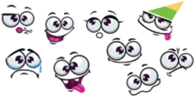

Se așeză la computer și începu să joace „Duke”. Era cel mai bun joc. Aveai în față o armă și puteai să mergi înainte, înapoi, la dreapta, la stânga, doar apăsând pe săgețele. Trăgeai în rafale și omorai la monștri cu nemiluita. Găseai chei și deschideai uși secrete. Ca-n realitate. Se-ntreba uneori dacă Duke, eroul, sau monștrii știau că nu sunt adevărați, că totul e doar un joc, în care ei trebuie să facă tot ce le comandă copilul care se joacă. Nu, sigur că nu știau.
Când se plictisi își puse rolele și, cu caietul cel gros în buzunar, ieși la colțul străzii. Nu mai apăruse, deocamdată, nimeni din gașcă. Pe trotuarul celălalt trecu încrezuta de Ana, cu celelalte capre, Florina și Elena. Băiatul își luă vânt, încercă fluturele, dar fetele nici nu se uitară la el. De parcă Ana și el nu fuseseră prieteni până acum o lună, când i-o suflase Călăul dintr-a opta. Îi ziceau așa, fiindcă dădea la picioare la fotbal. ,,Lasă, Ano, că te aranjez eu”, își spuse Florin în sine, regretând că în ultimele pagini n-o făcuse decât să plângă la marginea drumului după un amărât de han. Lasă, că romanul nu s-a terminat! Ca să se răcorească își luă o înghețată pe băț și, rozând din ea câte puțin, alunecă pe role, lejer, prin fața vitrinelor de magazine…
★ …fără să bănuiască niciun moment adevărul: că, la rândul lui, el nu trăiește în realitate, că e și el doar un personaj din povestirea mea și că eu, scriitorul, pot să-l fac să meargă pe role mai departe, să se oprească, să dea colțul străzii, să se împace cu Ana, să se ducă la școală, chiar dacă-i vacanța, și să ia numai zece sau numai doi, și orice-mi mai trece mie prin minte. Pe ecranul computerului meu, în fața căruia lucrez de o oră și jumătate, văd ultimele rânduri ale povestirii pe care tocmai o citești, chiar în clipa asta. Povestirea am s-o duc la editură ca să fie inclusă în manualul tău. Abia acum, când tu o citești, ea începe să existe cu adevărat. Și…
Dar stai o clipă, că sună la ușă. Mă ridic de la birou, străbat holul și deschid. E poștărița.
— Sunteți domnul Florescu?
— Da.
— V-am adus o telegramă. Semnați aici.
|
Mircea Cărtărescu (n. 1 iunie 1956) este conferențiar universitar la Catedra de literatură română a Facultății de Litere a Universității din București. Este autor de poezii, proză, eseuri, publicistică, jurnale. A debutat ca poet cu volumul Faruri, vitrine, fotografii în anul 1980 și este cunoscut pentru Levantul, Enciclopedia zmeilor, Gemenii, REM, Mendebilul, Fata de la marginea vieții – povestiri alese, Solenoid. Operele sale au fost traduse în foarte multe limbi străine. A primit numeroase premii naționale și internaționale. |
Alege unul dintre emoticoanele de mai jos pentru a exprima starea provocată de lectură. Motivează, oral, alegerea. Poți folosi unul dintre cuvintele: plictiseală, tristețe, bucurie, entuziasm, uimire, liniște, amuzament, confuzie, dezamăgire etc.
Citește, cu voce tare, enunțurile din care ai aflat:
10